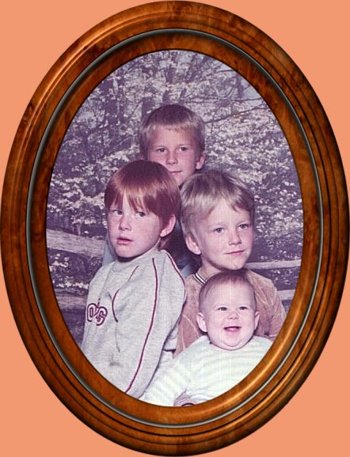

|
Here you can learn a bit about me, my family and our gorgeous little dogs. Here is a pic of our sons when they were younger.  Yes
we were blessed with 4 wonderful sons.
That's enough for this page..Now if you're curious you will have to go in and read some more.LOL. Please don't forget to sign my guestbook. Thanks.
Background
and graphics are made my
|